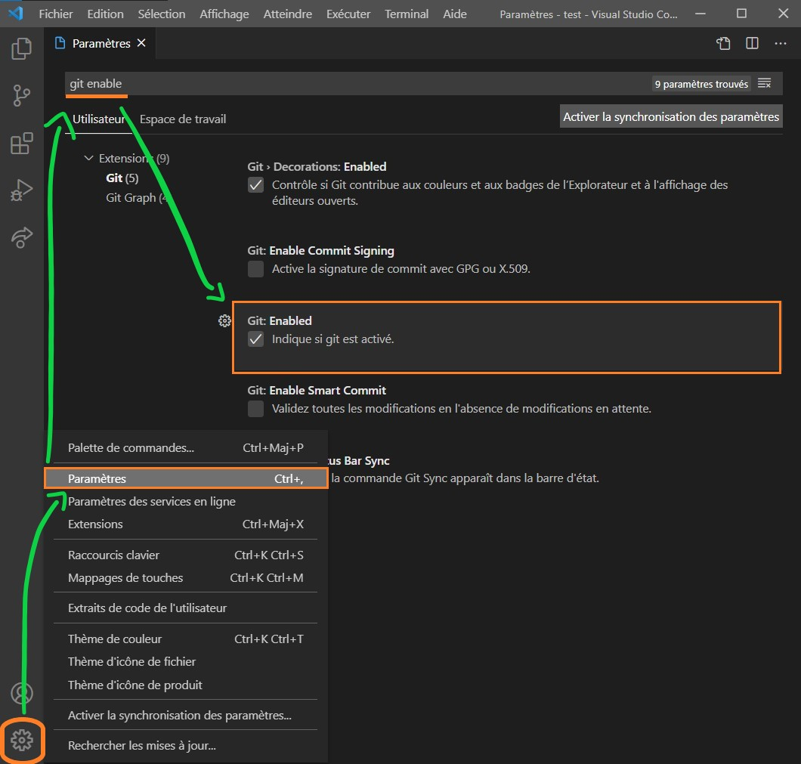

Vérifier dans les préférences vscode que Git: Enable est bien coché
Ou alors c'est que git n'est pas encore installé sur votre hôte
(si vous tentez la manipulation depuis
votre
hôte et non depuis la VM) ,
dans ce cas, il suffit d'installer Git
à
l'installation faites next en laissant coché ce qui était coché par défaut
puis dans le terminal (de votre hôte)
pensez à configurer git en tapant ces 2 lignes de code :
Puis recommencez la manip' pour publier sur Git !